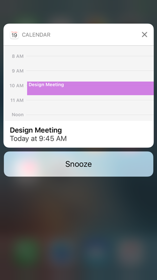

Notifications 通知


无论设备被锁屏还是在使用中，app都能随时利用通知来提供及时和重要的信息。比如，通知可能会在以下几种情况出现：
• 当新消息到来时
• 一个事件将要发生时
• 有新数据可获取时或是某些状态发生改变时
用户在锁屏上、在屏幕顶部（使用设备时），以及通知中心（通过从屏幕顶部边缘下滑呼出）看到通知栏。每个通知都包含应用名称、一个app图标以及一条消息。通知的到来也可能伴随声音提示，以及app图标上小红点角标的出现和更新。
每个app的通知行为都可以在设置里面被单独管理。只要是支持通知功能的app，你有可以完全地打开或关闭这个功能。你同样可以设置通知是否在通知中心和锁屏上可见，是否在app图标上出现角标，以及选择以下一种通知样式：
• 横幅：当设备在使用时在屏幕上方出现几秒，然后消失
• 提醒框：当设备在使用时在屏幕上方出现，直到被手动关闭


在未锁屏的设备上通过点击通知、或是在锁屏时右滑，来结束通知、把它从通知中心移除并打开发送通知的应用展示相关的内容。比如，在未锁屏的设备点击一条新的邮件通知，就会打开邮箱并且显示新的信息。
在一个未锁屏的设备，上滑通知或让它消失能够关闭通知，也可能将它从通知中心移除。
使用3D Touch 在一个通知上按压，或时在未锁屏时在通知上下滑，就能打开拓展的详情视图。这个视图支持自定义并且包含最多四个操作按钮。比如，一个待办事项app可以推送一个含有详情视图的任务通知，上面有可以推迟任务和标记为已完成的按钮。一个日历事件的通知提供了“小睡”操作来推迟事件的闹铃。

TIP
• 通知可以是本地或是远程的。本地通知由同一个设备发出和接收。一个待办事项应用就使用本地通知来提醒用户一个将要到来的会议或是到期日。远程通知，也叫做推送通知，来自一个服务器。一个多玩家游戏就使用远程通知让每个玩家知道什么时候轮到他们了。
• 用户必须明确通过选择来接收来自每个app的通知——他们在第一次使用app的时候都被要求这么做。如果有人选择不接收通知，他们同样也能通过访问设置来选择接收。

提供有用的通知（Provide useful, informative notifications.）。用户打开通知是为了快速获得最新消息，所以你的重点是提供有价值的信息。使用完整的句子，句首字母大写，合适的标点符号，并且不要截短你的信息——必要时系统会自动处理。避免在通知中引导用户打开你的app，进入指定页面然后点击指定按钮来完成一些任务，因为当通知被关闭时用户很难记住它们。
就算用户没有作出回应，也不要为同一件事情发送多个通知（Don’t send multiple notifications for the same thing, even if the user hasn't responded. ）。用户只有在方便时才会理会通知。如果你为同一件事发送了多个通知，并且填满了通知中心，那么用户就很可能关闭来自你app的通知。
不要包含你的app名字和图标（Don’t include your app name or icon. ）。系统会自动地在每条通知的顶部显示这些信息。
角标是用来补充说明通知，而不能表示重要的信息（Use badging to supplement notifications, not to denote critical information.）。记住app的角标可以被关闭。如果你的app依赖于通过角标来传达重要信息，就等于你在冒着用户会错过这些信息的风险。
保持角标实时更新（Keep badges up to date. ）。当收到对应的消息时立即更新你的app角标数字。你也不想让用户猜测是否收到了新消息，他们只有在看到确切提示之后才会进入你的app查看。请注意将角标上的数字清零意味着同时在消息中心移除所有相关的通知栏。
提供声音以辅助你的通知提醒（Provide a sound to supplement your notifications.）。当用户没有盯着屏幕时，声音是一个引起他们注意的绝佳方式。一个待办事项app，在需执行重要任务时可能就会播放一个提示音。你的app可以使用自定义声音或是系统的提示音来达到效果。如果你使用自定义的声音，请确保它是简短、与众不同并且制作精良的。请参阅Local and Remote Notification Programming Guide中的Preparing Custom Alert Sounds部分。
请记住用户可以随时地关闭通知提示音。他们也可以开启伴随着声音的振动——这只能被手动开启，而不能通过你的app程序来关闭。


提供有用的通知（Provide useful, informative notifications.）。用户打开通知是为了快速获得最新消息，所以你的重点是提供有价值的信息。使用完整的句子，句首字母大写，合适的标点符号，并且不要截短你的信息——必要时系统会自动处理。避免在通知中引导用户打开你的app，进入指定页面然后点击指定按钮来完成一些任务，因为当通知被关闭时用户很难记住它们。
考虑提供一个详情视图（Consider providing a detail view. ）。一个通知的详情视图提供了关于该消息的更多信息，并且允许他们在不离开当前环境的情况下去执行快速的操作。这个视图应该包含有用、易识别的信息，让人感觉就是一个你的app自带的插件。它可以包含图片、视频以及其它内容，它还能在显示时动态更新。比如，一个拼车app就能够在该视图展示一个地图，并标出正在朝着你的位置行驶的汽车位置。
提供直观、有用的操作（Provide intuitive, beneficial actions. ）。一个通知的详情视图能最多包含四个操作按钮。这些按钮应该用来执行常用、省时的任务，而不用通过打开你的app。使用简短、首字母大小写的名称，明确地描述操作的结果。一个通知的详情视图还能在屏幕上呼出一个键盘用来收集执行操作需要的信息。比如，一个通讯app可以允许用户直接在新消息通知上回复。
避免展示破坏性的操作（Avoid providing destructive actions.）。要在通知详情视图里展示破坏性操作之前请仔细考量。如果你必须展示它们，确保用户拥有足够的上下文信息，以避免出现意外后果。破坏性的操作应该以红字呈现。
了解更多开发细节，请参阅Local and Remote Notification Programming Guide。